Скриншоты headless Chrome, окна 2560×1440 и 1920×1080, масштаб 1:1. «Было» — опубликованная версия до правки, «Стало» — текущая, «Макет» — растровый макет 2560×1440, вырезанный по тем же координатам.
Главная, подвал. Замечание: текст в кнопке подвала меньше, чем в такой же кнопке шапки.
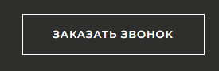
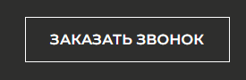
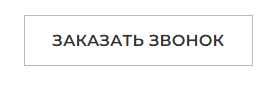
Главная, первый экран, кнопка «Подробнее». Замечания: заливка светлее макета, стрелка отличается.
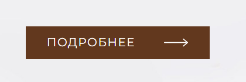
#62381e, стрелка 42 px с тонким открытым остриём.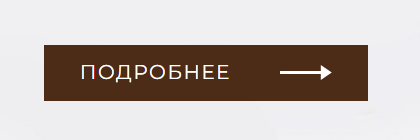
#4d2c17 — как в макете; стрелка 52 px, голова залитая.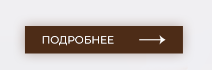
#4d2c17, стрелка 52 px, шток тонкий, голова — сплошной треугольник.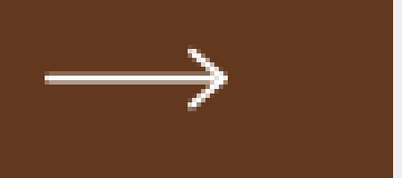
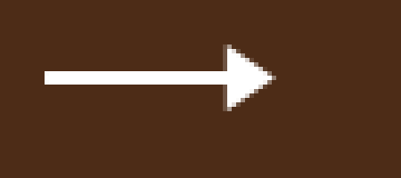
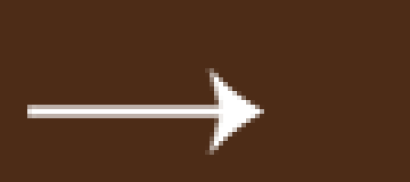
Замечания: «Где купить» (4 кнопки «Перейти») и 404 («На главную»). Стрелка заменена во всей семье — на всех 25 экранах, включая модальное окно звонка.
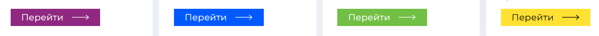
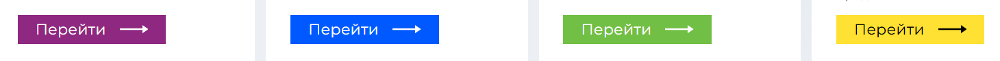
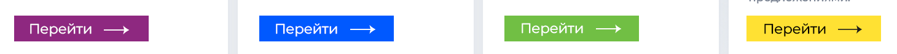
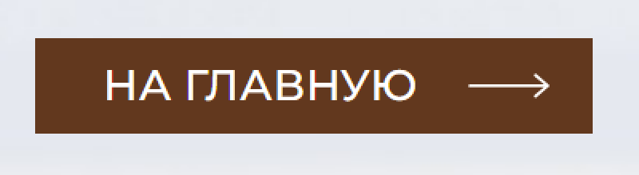
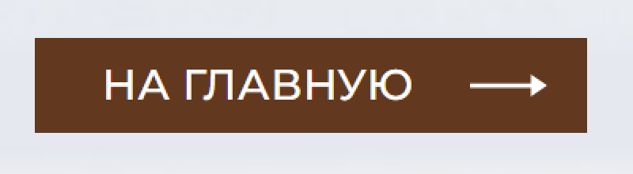
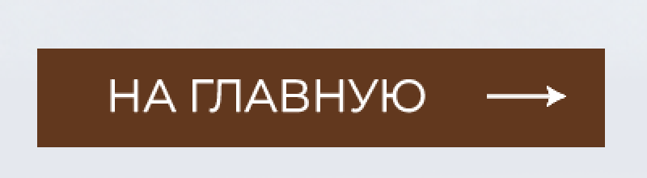
Карточка товара, фото с банкой и растением. Замечание: тень от краски направлена в другую сторону, есть тень у растения.
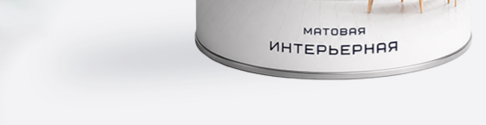
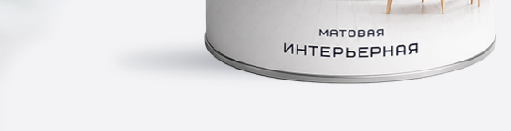
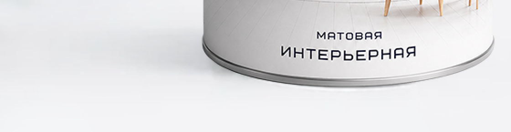
Плотность сверена по пикселям: строка y=790, x=260–360 — у нас 234/227/223/216/210/203, в макете 231/229/223/221/208/187; правее банки и на полу под ней разница в пределах 1–2 единиц яркости. До растения (x < 260) фон 244 — тени там нет.
Карточка товара, «Описание товара» / «Технические характеристики». Замечание: в макете толще текст и линия под «Описание товара».
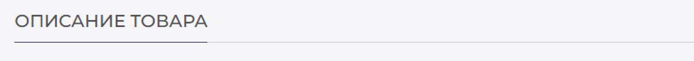
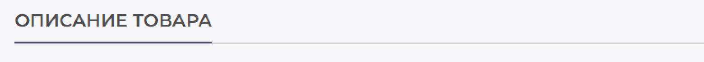
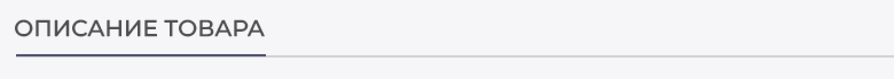
Все правки держатся и на рабочем разрешении 1920 (страница масштабируется, кегли и толщины пересчитываются пропорционально).
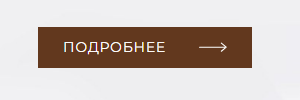
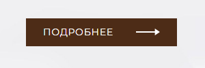
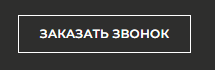
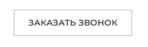
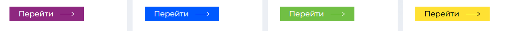
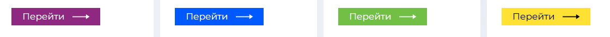
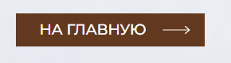
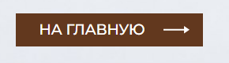
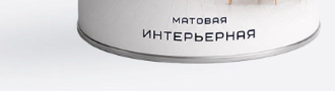
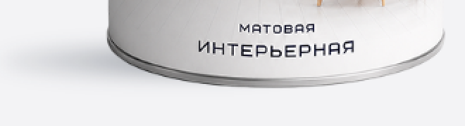
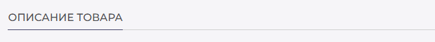
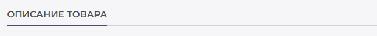
Все правки опубликованы на проде. Скриншоты сделаны с реальной сборки 2560 и 1920, кропы вырезаны по одной и той же области для «Было», «Стало» и «Макета».